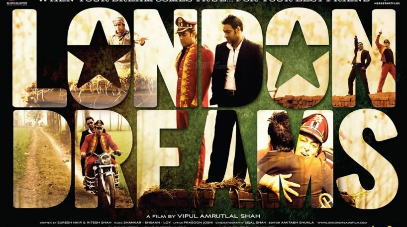

Entertainment Film Essay
London Dreams Could Have Been, Should Have Been

I vaguely remember walking out of that grungy cinema hall in West Delhi in Early November 2009. The infamous Delhi winters had announced their arrival, and I walked out of the pocket-friendly single-screen theatre at about 8 or 9 in the evening, after my third viewing of London Dreams that same week, with the third set of friends I had brought along. It was less about me wanting everybody around me to not miss out on this film I had unexpectedly taken a liking to, and more about whether I was the 'odd one', the only cinematically illiterate buffoon who had liked a 'Bollywood' film nobody else seemed to love. I had just started ushering myself into the cine-lover cult of Delhi and was surrounded by film buffs who'd eat a Fellini for brunch and a Chan-Wook for dinner. They would not let anybody else play a Bollywood song around them and swore by the likes of Floyd and the Rolling Stones. (It took me around a decade more to learn the word 'pretentious').
Even my Bollywood-loving brethren, the second group I watched London Dreams with, seemed nonchalant about the film. It certainly didn't help that the 2000s were probably the best decade for mainstream Hindi cinema. Films like Rang De Basanti, No Smoking, Kaminey, Dev D, Oye Lucky Lucky Oye!, LSD, and even Veer-Zaara had raised the bar for Hindi cinema significantly. London Dreams, to me, felt like that bullied kid in class who knew some answers but couldn't raise his hand because the other kids were more confident, or gave the same answer better.
Everyone hated London Dreams; they sniggered at it, mocked the melodramatic scenes, and didn't respect the fact that I had paid for their tickets and patties, let alone the feelings of a bright-eyed wannabe storyteller in his early formative years.
The cursed desire to fit in took over, and I left London Dreams buried in the corner of my mind.
I had let go of London Dreams the film, but London Dreams the musical cemented a space in my head and never left. The soft aggression of 'Shola Shola', that melodious and manic Hanuman Chalisa recitation towards the end of 'Barson Yaaron', and Shankar Mahadevan's intoxicating auto-tuned voice in 'Khanabadosh'. I would randomly find myself humming Hanuman Chalisa, and those 3 minutes of visuals would inadvertently follow. It was the pivotal moment in the film; the core conflict was introduced. Salman Khan jumps into the crowd in that surreal slow-motion moment. A genius sequence that revealed that Ajay Devgan's recurring fantasy of jumping into the arms of an elated crowd was, in fact, destined not for him but for his best friend. The emotional impact of that sequence was right at the top, with Rang De Basanti's Atul Kulkarni going off the rails and beating a policeman in the song 'Khoon Chala', or Abhishek Bachchan pinning down a violent and aggressive, yet heartbroken Mamdu in Delhi-6.
And this isn't a one-off great moment in the film. London Dreams is sprinkled with a lot more of those little patches of greatness that I eagerly waited for the second and the third time. Thankfully, the emotional impact of those sequences never changed even after consecutive viewings; they remained as fresh. And they remain fresh today, as my fourth viewing of the film unfolded.
The weather is the same; it is December. My eyes got moist the same way, at the same moments, and at the end of it all, my thoughts on the film have stayed the same even after 16 years. So, here's one to the writers Suresh Nair and Ritesh Shah, and the director Vipul Amrutlal Shah, Shankar Ehsaan Loy, and every other artist who contributed their vision to the film.
I don't intend to review the film. I find reviews senseless anyway. The term film review should be rechristened as 'Personal Opinions'. Now that I myself am a filmmaker, I find that everybody is unique, and that, based on their taste, cultural background, conditioning, opinions on the same film can be drastically different between two people. What if a huge chunk of the audience that could have really enjoyed the film stumbles upon a few unfavorable reviews, and ends up stripping themselves of what could have been a great cinematic experience? Moreover, I find it dangerously wrong for someone to claim authority on whether a film is working or not. It's a very subjective world, after all. I wonder what could have happened had I listened to the reviewers and skipped No Smoking or Delhi-6 in the theatres, two of the best cinematic experiences of my life.
Sorry, I digress.
I don't have the desire for everyone to like London Dreams; I just wish this film was talked about more and had some sort of place in the public consciousness. It is sad when a friend told me that I was unearthing a film that had died long ago. It's heartbreaking, really. Really, really heartbreaking.
The film tells the timeless story of two childhood friends: one with the dream to become a musician, the other with an inherited talent for it. The one with the dream happens to be a hard worker and disciplined, while the other is nonchalant. The dreamer makes it big and, as a gesture of friendship, helps his non-dreamer friend join him in his dream. Fate laughs at the dreamer as the dream he's chasing begins to inch towards the non-dreamer. In a way, the film imbibes the Western New Thought philosophy of 'let it go, and it will be yours'. The dreamer's insecurity sets in, and the Banality of Evil plays its game, and lo and behold, the non-dreamer achiever falls victim to the dreamer's dark side.
I never enjoyed every nook and corner of London Dreams. There are long stretches of me wanting to go back in time, entering the editing room and putting some sense in the decision-makers. I wish Salman's character, although largely enjoyable, weren't such a caricature. I wish the dialogues were better and not in-your-face all the time. I wish the writers and the director respected their audience's intelligence and not dumbed it down to a degree where I cringed and wanted to scream - 'WE GOT IT THE FIRST TIME. DO NOT SHOUT IT AGAIN AND AGAIN!!'
No film is perfect; even the best films out there have imperfections, but some films are honestly imperfect, and this is not one of those films. Here, the director had a great story, and he panicked. He wanted to make one of the biggest hits of Indian cinema ever, and dare I say, he had the right ingredients for it. He just added a little more sugar to the dish and forgot about the diabetic audience. To balance things out, he added some spice, which became a bit too much too and probably repelled those with no tolerance for spice. In the end, it became a huge mess of a dish that exuded a pleasant aroma, but tasted weird.
I don't have much of a sweet tooth. So, I wish the dish had more spice and less sugar, and that it was cooked on a low flame.
London Dreams is that film for me. A very, very flawed masterpiece, but a masterpiece nevertheless.